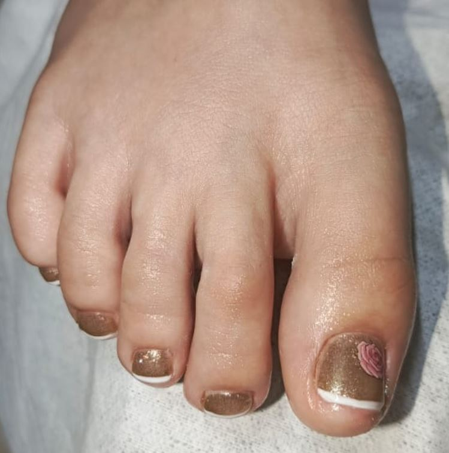

Cuidado, relajación y estilo profesional para consentir los pies de las más pequeñas

Un ritual de bienestar y cuidado delicado para los pies infantiles. Incluye limpieza suave, hidratación profunda, corte adecuado de uñas y esmaltado con productos seguros y libres de tóxicos para que luzcan hermosos y saludables.